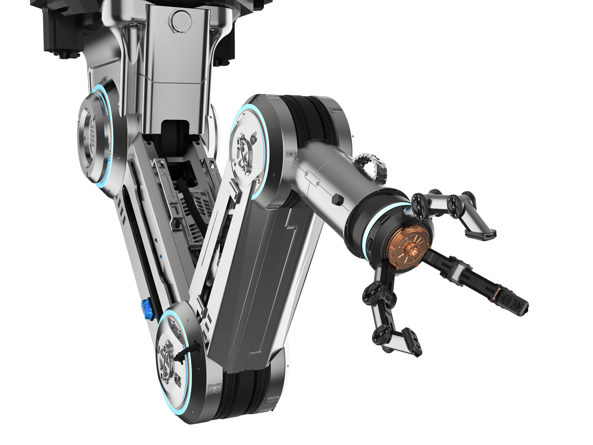
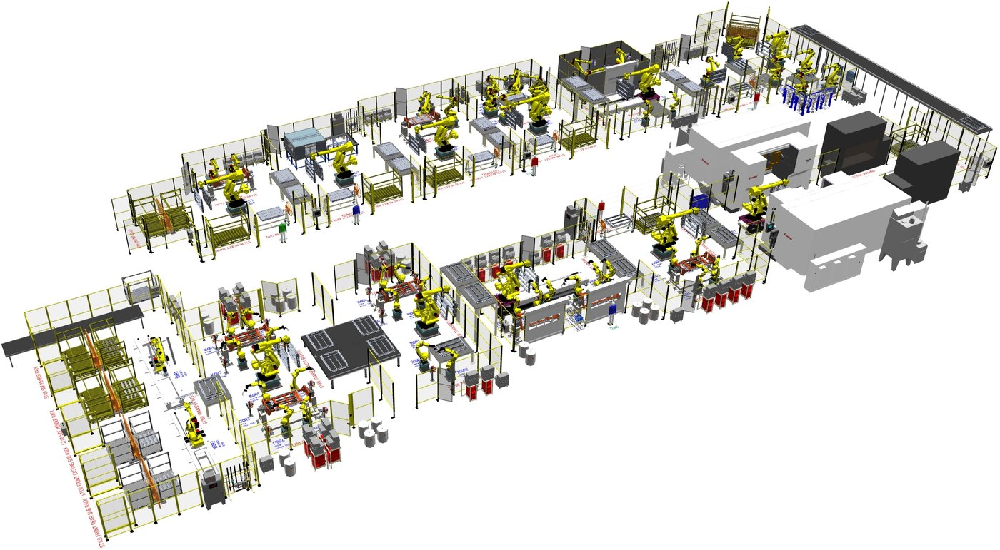
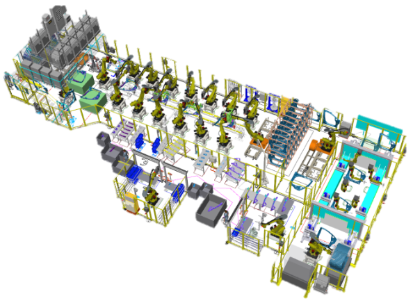

Advanced Manufacturing Engineering
Optimizing Production Efficiency, Quality, and Scalability

Are Your Manufacturing Processes Optimized for Maximum Efficiency?
The challenge
Typical issues we see
- Not optimized product design leads to inefficient manufacturing
- Poorly planned layouts causing space and resource inefficiencies
- Process inefficiencies impacting cycle times and production throughput
- Bottlenecks and capacity constraints limiting scalability
- Variations in product quality due to unoptimized process flows
- Ineffective resource utilization leading to increased costs
- Lack of standardization affecting manufacturing alignment
- Unvalidated production methods causing unforeseen downtime and redesign expenses
Key Inputs Required for a Tailored Manufacturing Strategy
3D Product Data
Digital representation for design validation and feasibility analysis
Volume Targets
Required annual and weekly throughput production expectations
GD&T Specifications
Precision tolerances and dimensional control requirements
Operational Constraints
Floor space, labor, and capital investment considerations
Deliverables: Solutions That Translate into Results
Product Design and feasibility support
Ensures manufacturable product & process designs while minimizing costly redesigns and implementation risks.
Comprehensive Quality Assurance & Risk Mitigation
PFMEA and GD&T-based analysis proactively prevent defects and reduce quality risks. Process fastening analysis with GD&T
Validated & Scalable Manufacturing Process
Optimized workflows eliminate inefficiencies and enable seamless scaling and increased throughput.
Global Program Management & Multi-Region Alignment
Standardized production practices improve consistency and efficiency across global sites.
Advanced Process Development
Streamlined processes reduce cycle times and maximize output with minimal downtime.
Operational Standards & Best Practices
Tooling and assembly guidelines reinforce process efficiency and ensure implementation consistency.
Strategic Layouts & 3D System Design
Space-efficient designs enhance layout planning, reach analysis, and resource utilization. Efficient planning of process material.
Resource & Manpower Optimization
Detailed utilization analysis supports lean operations and effective resource allocation.
Advanced Robotics & Joining Technology Validation
Robotic and joining process studies enhance manufacturing precision and product quality.
Cost-Effective Capital & Implementation Strategies
Accurate planning of space, manpower, and tooling drives optimized investment and execution.
In practice
Simulation and analysis outputs


Next step
Boost output & reduce waste with engineered production strategies tailored to your scalability and quality goals.
Tell us about your line, your targets and your constraints. We come back with a scoped proposal, not a sales call.